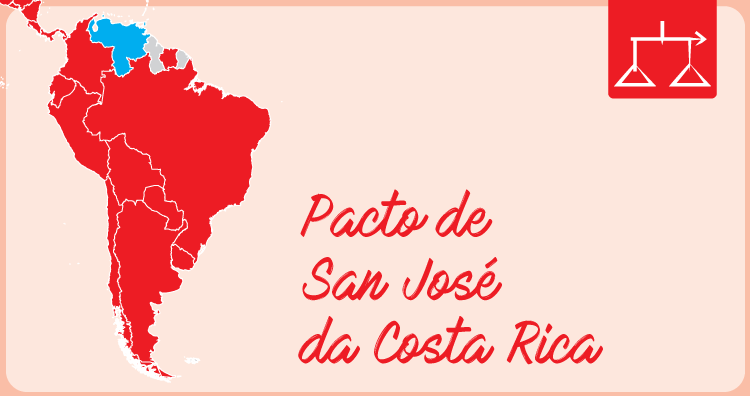

CONVENÇÃO AMERICANA DE DIREITOS HUMANOS de 1969 - PACTO DE SAN JOSÉ DA COSTA RICA
Os Estados Americanos signatários da presente Convenção,
Reafirmando seu propósito de consolidar neste Continente, dentro do quadro das instituições democráticas, um regime de liberdade pessoal e de justiça social, fundado no respeito dos direitos humanos essenciais;
Reconhecendo que os direitos essenciais da pessoa humana não derivam do fato de ser ela nacional de determinado Estado, mas sim do fato de ter como fundamento os atributos da pessoa humana, razão por que justificam uma proteção internacional, de natureza convencional, coadjuvante ou complementar da que oferece o direito interno dos Estados americanos;
Considerando que esses princípios foram consagrados na Carta da Organização dos Estados Americanos, na Declaração Americana dos Direitos e Deveres do Homem e na Declaração Universal dos Direitos do Homem, e que foram reafirmados e desenvolvidos em outros instrumentos internacionais, tanto de âmbito mundial como regional;
Reiterando que, de acordo com a Declaração Universal dos Direitos Humanos, só pode ser realizado o ideal do ser humano livre, isento do temor e da miséria, se forem criadas condições que permitam a cada pessoa gozar dos seus direitos econômicos, sociais e culturais, bem como dos seus direitos civis e políticos;
Considerando que a Terceira Conferência Interamericana Extraordinária (Buenos Aires, 1967) aprovou a incorporação à própria Carta da Organização de normas mais amplas sobre os direitos econômicos, sociais e educacionais e resolveu que uma Convenção Interamericana sobre Direitos Humanos determinasse a estrutura, competência e processo dos órgãos encarregados dessa matéria;

Para ver a matéria completa, continue no link abaixo...